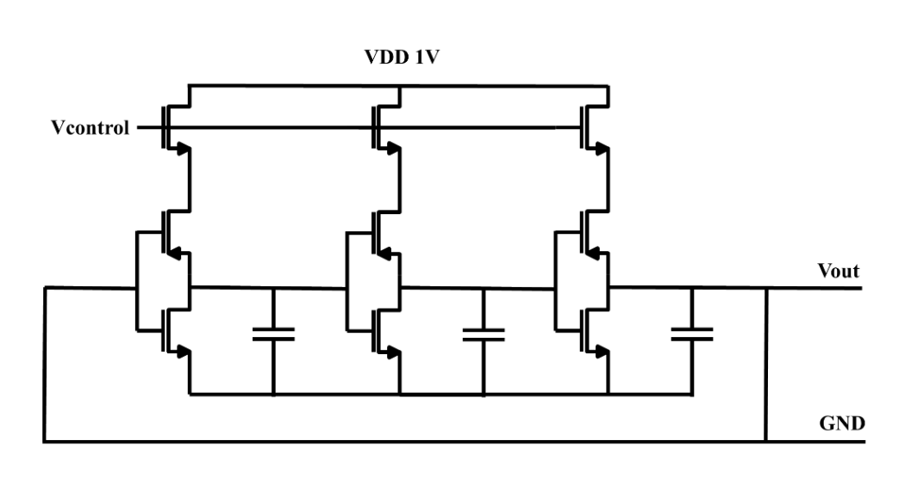

Thermally Actuated Optical Shutter
Abstract: Standard laser cutting and engraving systems require shutters to prevent continuous laser exposure, which can cause thermal effects on the substrate that limit resolution and precision. This project presents a MEMS laser shutter with a tunable frequency of operation, enabling its usage in a variety of micro-laser applications. By supporting precise frequencies, the machine aims to obtain a flexible and efficient laser shutter system. The proposed control mechanism uses a microcontroller-operated, voltage-controlled ring oscillator to ensure precise switching frequencies.

Figure I. Fabricated MEMS device under the Microscope.
MEMS Modeling, Fabrication and Testing:
Our MEMS device is designed based on a silicon-on-glass(SOG) model, in which the glass functions as anchoring while silicon is the key for both electrical conduction and displacement, which leads to capacitance changes.
Modeling: Modelings were done on COMSOL using the Solid Mechanics, Electrostatics and Heat Transfer physics. The goal is to optimize the deflection while minimizing the time constant, such that the switching between ON/OFF state is fast enough to achieve the desired frequency range between 40Hz and 140Hz. Parametric sweeps were done for dimensional parameters such as chevron beam lengths, actuator beam lengths and shutter length.To validate our design, we examined the maximum temperature, stress, and minimum feature size on the surface to ensure they met safety standards: staying below the melting point and fracture strength of silicon, and above the 5 µm minimum feature size requirement.
MEMS Mask Layouts: Mask layout was done using AutoCAD. There are three layers: glass layer (yellow) for anchoring, platinum layer (purple) to prevent back-etching at open areas, aluminum layer (green) for the doge design, and silicon layer (cyan) for modeled MEMS.
Testing: The fabricated MEMS chip was tested on a bench with various current inputs after cleaning each pad with 80mA of current. With the help of angle ruler, we are able to approximate the displacement at the tip.
Here is a short clip of our MEMS optical shutter operating with 1.6A of current, splitted among 4 chevrons.
Here is a short clip of the MEMS optical shutter being burnt at 1A(ideally it should endure 2A of current)...
Circuits
The circuit design includes three main devices that allow the system to function together...

We used a ladder DAC and carefully tuned the W/L ratio of each transistor in order to achieve desired output frequency precision for each voltage input.

A voltage controlled oscillator is constructed to generate sine waves of frequencies determined by DAC output.

With the help of a Schmitt Trigger, the system is able to transform the output from a sine wave to square wave, which reduces latency...

The off-chip circuit consists of a boost converter to increase the Schmitt Trigger output from 3.3V to about 5V...